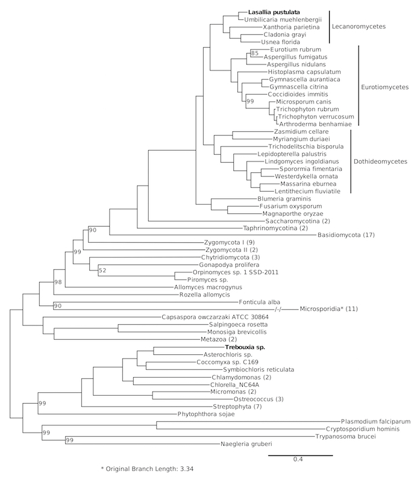

Python for Evolutionary Genomics
2017-05-17
Bastian Greshake
Some Background
BSc in Life Sciences
MSc in Ecology/Evolution
Now: PhD student in Applied Bioinformatics
Methodology


Instead of 4 fragments: ~300,000,000 to sequence the human genome.
And now?
What we want
Comparative GenomicsComparative Genomics
Using NCBI
NCBI Nucleotide database
Search for a given taxa
Search for a taxonomic range
Enter Biopython
Let's automate those sequence downloads